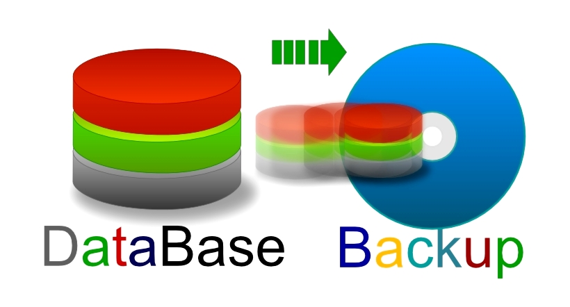
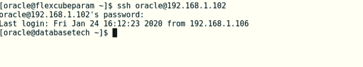
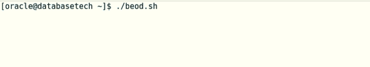
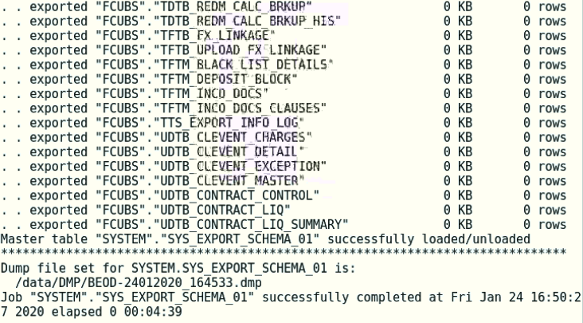
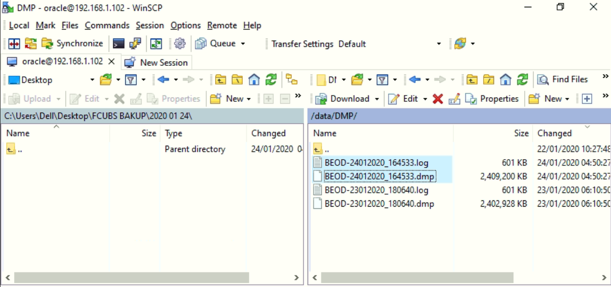

Database backup

Database backup is the process of backing up the operational state, architecture and stored data of database software. It enables the creation of a duplicate instance or copy of a database in case the primary database crashes, is corrupted or is lost.
In this example:
Using MobaXterm, open ssh session to the database server: ssh oracle@192.168.1.102

Run the script: ./beod.sh

This script will take a database backup (tables and sequences). We will use this backup to restore the database in case of any failure during the EOD later on.
The Backup name = BEOD-"server time".dmp
When database backup completed, the output should be like the following picture:

Note that the backup destination is: /data/DMP/
When the EOD compete (status =C) for all branches. We should take another database backup using MobaXterm by running the script: ./aeod.sh (follow the same steps as ./beod.sh).
The Backup name = AEOD-"server time".dmp
When the ./aeod.sh complete, you will find the backup on the database server under the following directory: /data/DMP/
Use WinScp to copy the generated backup to external hard drive.
